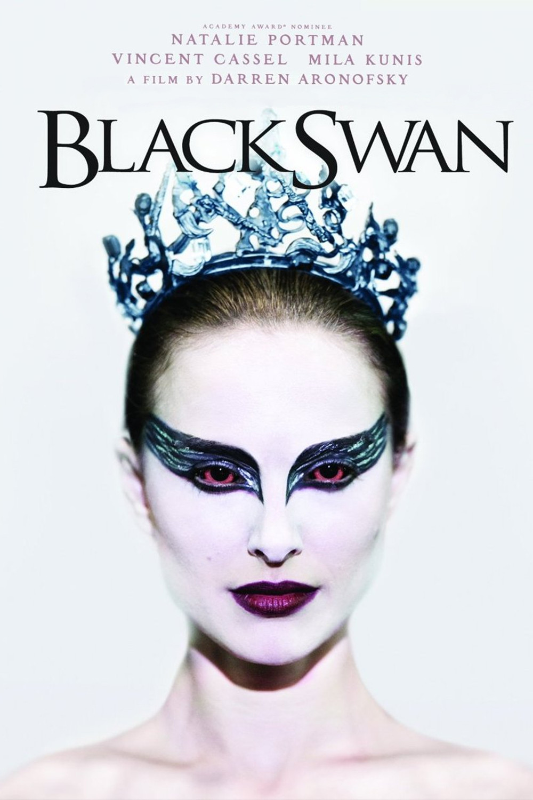
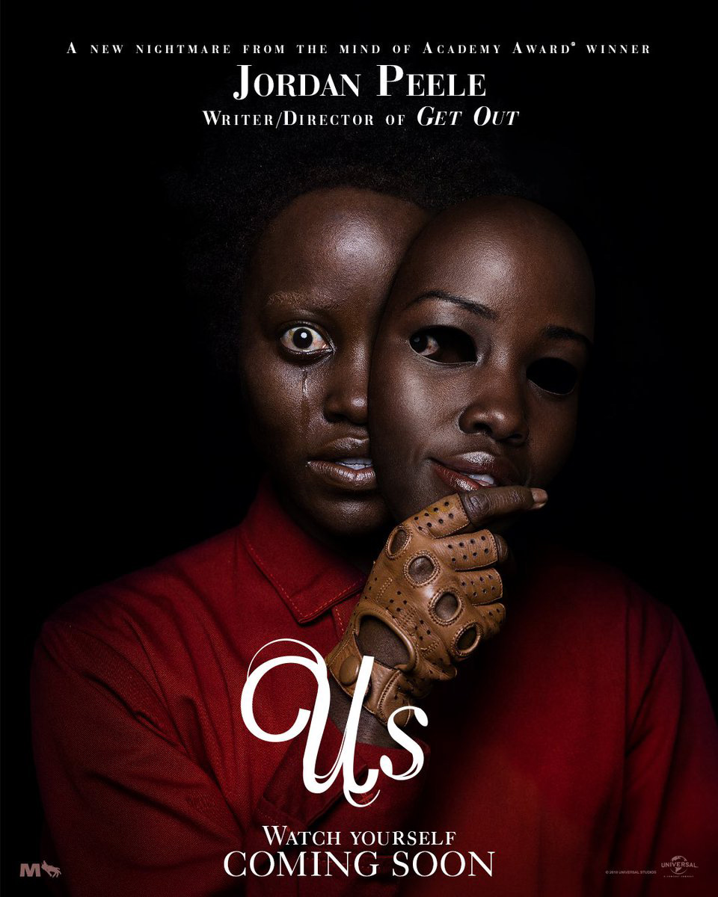
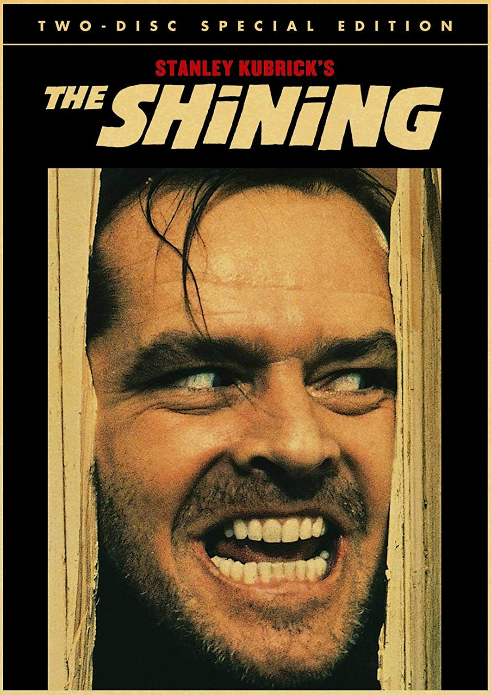

Some Of My Hobbies And Interests
I like Volleyball alot
I think i started playing since i was around 8 and my dad really got me into it.
Its fun and very stategic which i like. I position which i play and like the most
is setter. Now that im thinking about it, i haven't gotten to play a proper game
with my friends and other people since covid struck.
probably really weird for a 14 year old to say but I like crocheting
I think i first learned how to crochet in grade 4 from my then homeroom teacher, which
is honestly really weird looking back. I then really didnt even crochet again until this
past summer where we were all stuck inside. I made a little blanket/throw thing.
Onviously i love watching TV and movies
I mentioned in the random facts page that i really like Horror movies, i really to enjoy
them way better than pretty much any other genre. I also really like psychological thrillers
since they sort of mess with your head abit and make you think. My favorite movies of all time
have to be Black Swan(2010), Us(2019), and The Shining(1980).



i mentioned in the musicial taste page how i listen to music quite a bit.
I think it counts as a hobbie and and if you count it as a hobby than i would say it's
my favorite hobby. I guess I just don't like quietness.